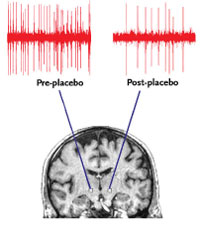

Date: Fri, 27 Aug 2004 13:19:42 +0200
A long time ago (1987), a french logician (a student at that time),
Philippe Balbiani, who did attend a talk I made
on the logic of self-reference (G) in Toulouse send me a letter
where he proposes informally to interpret the Lobian formula
(that is B(Bp->p)->Bp) as a form of closure for the french
self-persuading strategy known as "la méthode Coué" (la methode Coue)).
I must confess I was not really convinced. I thought this would be
somehow to beautiful to be true. My mind will slightly evolve on that
question when I will understand, in part through Smullyan's FU
(Forever Undecided) that the Lob formula does indeed capture,
at least formally, a form of self-fulfilling nature of machine's belief.
The Lob formula does indeed say that if a machine believes Bp->p for
some proposition p, then the machine will believe p.
This is very astonishing, and still quite mysterious to me. My thesis
has never been based directly on Lob formula, except that through
Solovay's theorem Lob formula formalize the entire discourse of
the self-referentially correct machine.
Then recently, when I was just explaining the Lob formula
in my Amsterdam paper, John Mikes send me the message below
which shows experimental evidence on the working of the placebo
effect (quite similar to the methode Coue). I have download many
papers on the placebo and eventually conclude that Lob formula
could indeed provide a formal explanation of the working of
that placebo phenomenon.
This makes reality still more "psychological" like if the universe(s)
was the product of a form of wishful thinking! It also vindicates
in a deeper way the similarity between the Grand-Mother
psychology and the Lobian machine psychology. Thanks to John.
With the Knight Knaves Island Lob's theorem is not difficult
to explain and we can go back to that (but apparently some KK
posts are missing in the archive, and I don't know how to proceed,
and I will think the how and why for awhile).
A lot of physicians say the placebo effect is *subversive* with
respect to traditional science. What is clear is that it forces
even the therapist to address (at least) the mind body relation,
and this in some novel way (with respect to Aristotle).
Bruno
John Mikes wrote:
>Bruno, your topic, maybe interesting novelty (I doubt). IMO the brain can
>encode data in el-chem perception, no indication so far how the qualia-gap
>is transcended into thought context. Not even in picture/music/taste
>apperceptions. The neuronal brain is a TOOL and the ongoing reductionist
>research stops at phenomenology of "the tool does it so the tool does it
>all". (Philosophy of "kill the messenger").
>I hold the complexity to which "human" belongs unseparable in its
>functions unless one is a faithful dualist with a soul. Even then: does
>the 'soul' think?
>
>John
>----- Original Message -----
>From: <mailto:stonjek.domain.name.hidden>Robert Karl Stonjek
>To: <mailto:MindBrain.domain.name.hidden>A Group MindBrain
>Sent: Monday, August 02, 2004 5:50 PM
>Subject: [Mind and Brain] Article: New Views On Mind-Body Connection
>
>
>
>New Views On Mind-Body Connection
>
>
>
>
>
>Studies into placebo effect and empathy suggest how the brain encodes
>subjective experience | <mailto:erusso.domain.name.hidden>By Eugene Russo
>
>
>
>
>Courtesy of Fabrizio Benedetti
>bkg_spacer.gif
>access.jpgbkg_spacer.gif
>captionarrow.gif UNPRECEDENTED ACCESS: During a deep brain stimulation
>clinical trial, researchers detected elements of the placebo effect. The
>pre-placebo neuron was recorded from the left subthalamic nucleus as a
>control. The post-placebo neuron was recorded from the right subthalamic
>nucleus. Other neurons demonstrated a similiar decrease in activity.
>200px_dash.gif
>bkg_spacer.gif
>
>Revealing the complexities of the pain experience may offer a window into
>the mind-body interaction. Several recent studies into the placebo effect,
>human empathy, and their apparent interconnectedness are providing insight
>into the human subjective experience.
>
>Such investigations, says Jon-Kar Zubieta, associate professor in
>psychiatry and radiology at the University of Michigan, help scientists
>understand the intersection of physical and emotional states. "The placebo
>effect gets at the core of how individuals react and modulate
>environmental events, whether positive or negative in nature," he says. If
>harnessed, the regulatory mechanisms involved could point to better
>treatments for pain, depression, and stress.
>
>In earlier work, University of Turin physiology professor Fabrizio
>Benedetti showed that administering an opioid-blocking drug could reverse
>the psychological placebo effect.1 "People started believing there was
>something real there," says Columbia University assistant professor Tor
>Wager, lead author of a recent placebo effect study on functional magnetic
>resonance imaging (fMRI) .
>
>Wager's group took a different tack, uncovering regions of the brain that
>showed decreased activity during the placebo effect.2 In one trial, they
>told subjects that they were administering a powerful analgesic cream. In
>another, the subjects received the same cream but were told it has no
>effect. When subjects were experiencing the placebo effect, a subset of
>known pain-sensitive brain regions showed a signal reduction of 20% to 25%
>
>In a subsequent study, Benedetti's group observed patterns of neuronal
>firing, not visible via neuroimaging, that corresponded with Wager's
>findings.3 His group performed single-neuron recording in patients with
>Parkinson disease who had been administered a sham treatment.
>
>
>
>Read the rest at The Scientist
><http://www.the-scientist.com/yr2004/aug/research2_040802.html>http://www.the-scientist.com/yr2004/aug/research2_040802.html
>
>Posted by
>Robert Karl Stonjek
>
>
http://iridia.ulb.ac.be/~marchal/
(image/gif attachment: bkg_spacer.gif)
{kind=link}

(image/jpeg attachment: access.jpg)
{kind=link}
(image/gif attachment: 03-bkg_spacer.gif)
{kind=link}
(image/gif attachment: captionarrow.gif)
{kind=link}
(image/gif attachment: 200px_dash.gif)
{kind=link}

(image/gif attachment: 06-bkg_spacer.gif)